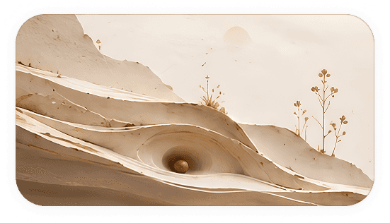

Follow one tiny grain as it finds its way home.
It's a little puzzle game that's all about taking your time and finding the perfect spot.
Find the Rest
It's a little puzzle game that's all about taking your time and finding the perfect spot.
Find the Rest

Quiet Grain started as a question: what if a game just wanted you to pay attention? Built for slow mornings, long commutes, and the ten minutes before sleep, it asks you to tilt, wait, and watch. Each level feels like its own little world, and the grain actually remembers its path.